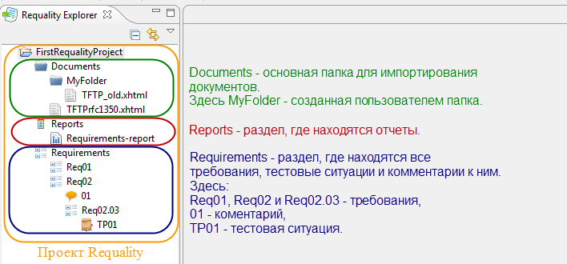

Requality: основная информация
Назначение инструмента
Requality - это инструмент для работы с
требованиями, в первую очередь к
программным системам. Он позволяет:
- определять набор требований к системе,
в том числе на основе анализа
существующих документов;
- структурировать требования:
группировать, снабжать их
дополнительной информацией;
- анализировать набор требований:
прослеживать полноту покрытия набора
требований тестами, выполнение
требований по результатам тестирования
и т.п.; генерировать соответствующие
отчеты.
Возможна совместная работа над документами и требованиями при их хранении с использованием любой системы управления
версиями, например, Git.
Инструмент реализован как плагин на
платформе Eclipse и может быть
использован как в средах разработки на
основе этой платформы, так и независимо.
Информация о разработчике
Домашняя страница проекта,
Официальный сайт инструмента
Отдел Технологии программирования,
Институт системного программирования им. В.П. Иванникова РАН
Почта для связи: requality@ispras.ru
Инструкция по установке Requality
Системные требования
Операционная система Windows или Linux. Поддерживаются архитектуры x86 и x86-64.
Для Windows должны быть установлены:
- Для версии Requality 1.3 и старше: OpenJDK8 HotSpot: выбрать OpenJDK8 (LTS), HotSpot -> Other Platforms -> выбрать Windows, x86 -> скачать JDK
- Для версии Requality 1.4 и новее: OpenJDK17 HotSpot: выбрать OpenJDK17 (LTS), HotSpot -> Other Platforms -> выбрать Windows, x64 -> скачать JDK
Также для корректной работы Requality в Windows необходимо установить следующие компоненты:
По умолчанию для Windows 10 количество одновременно открытых в Requality редакторов (вкладок) ограничено - не более 8.
Для снятия данного ограничения необходимо установить фикс реестра.
| Зависимости для Windows |
| Зависимость |
Рекомендуемая версия |
x86, x86-64 |
| OpenJDK8 HotSpot (1.3 и старше) |
8.0 |
x86 |
| OpenJDK17 HotSpot (1.4 и новее) |
17.0 |
x64 |
Для Linux должны быть установлены OpenJDK и libxt6. Указанные далее зависимости являются требованиями для Ubuntu 14 x86, x86-64. Для других систем Linux могут потребоваться дополнительные пакеты.
| Зависимости для Linux |
| Зависимость |
Рекомендуемая версия |
x86, x86-64 |
Название пакета |
| OpenJDK (1.3 и старше) |
8.0 |
i386 |
openjdk-8-jre:i386 |
| OpenJDK (1.4 и новее) |
17.0 |
x64 |
openjdk-17-jre |
| libxt6 (только для 32-битной версии на 64-битных системах) |
|
|
libxt6:i386 |
Пакеты могут быть установлены с помощью команды "apt-get install <package_name>" в консоли для Debian-подобных систем.
Установка Requality
Requality может быть установлена с помощью bundle. Для 64-битных систем и версий 1.3 и старше требуется использовать 32-битную версию Java и всех требуемых библиотек.
Последние опубликованные стабильные сборки можно скачать на главной странице официального сайта.
После окончания загрузки требуется распаковать архив в любое удобное место на диске. После распаковки Requality будет доступна для работы.
Внимание! Нужно иметь в виду, что для 64-битных систем может потребоваться указать путь к 32-битной версии Java в файле 'requality.ini'. Путь должен быть указан перед строкой "-vmargs" в виде текста:
"-vm
<путь-к-32битной-java>"
Например, <путь-к-32битной-java> может выглядеть так:
Плагины к Requality
Для Requality разработан ряд плагинов, предоставляющих дополнительные возможности. Плагины могут быть установлены в Eclipse, где находится Requality, с помощью update-site. Далее описан процесс установки плагинов и перечень доступных плагинов с описанием их возможностей и указание адресов update-site.
Установка плагина через update-site
Для такой установки плагина нужно знать адрес update-site. Далее в перечне плагинов для каждого плагина указан его update-site.
Процесс установки плагина:
- В Eclipse в главном меню откройте раздел 'Help -> Install New Software...'.

- В открывшемся окне 'Install' нажмите кнопку 'Add...'.

- В новом открывшемся окне 'Add Repository' в поле 'Location' введите адрес update-site. В поле 'Name' вы можете указать произвольное, понятное вам название для обозначения плагина. Под таким именем этот плагин будет фигурировать в общем списке установленных в ваш Eclipse плагинов. Нажмите 'OK'.
- В окне 'Install' плагин отобразится в списке доступных. На одном update-site может быть несколько плагинов, кроме того они могут быть сгруппированы в несколько групп. Вы можете развернуть группу, чтобы посмотреть, какие плагины в ней находятся. Для отображения списка плагинов без сортировки по группам нужно снять галочку 'Group items by category'. Если плагин уже установлен, пиктограмма перед его названием будет серой. Чтобы отображались только неустановленные плагины, нужно поставить галочку 'Hide items that are already installed'. На update-site может содержаться несколько версий одного плагина (актуальная и более старые), для отображения только актуальной, самой последней версии нужно поставить галочку 'Show only the latest version of available software'.

- Выберите нужный плагин в списке (отметьте галочкой), нажмите кнопку 'Next >' и следуйте дальше инструкциям диалога.
- В процессе установки плагина появится окно 'Security Warning', сообщающее об установке неподписанного контента. В нем нужно нажать 'ОК'.

- После окончания установки нужно будет перезапустить Eclipse.
Более подробно об установке плагинов можно прочитать здесь.
Обратите внимание, что ссылки в следующих подразделах предназначены только для использования в Eclipse для установки плагинов.
Requality Coverage Tools
Requality Coverage Tools требуется для создания различных отчетов о покрытии (см. Отчет 'Анализ покрытия требований',
Отчет 'Анализ покрытия выделенных требований', Отчет 'Прогресс по проекту').
Update-site для установки плагина Requality Coverage Tools: https://forge.ispras.ru/repo/requality/site
Requality GIT Connector
Requality GIT Connector требуется для работы с GIT через внутренний интерфейс Requality для GIT.
Также этот плагин нужен, например, при создании отчетов по шаблону 'Прогресс по проекту' (см. Отчет 'Прогресс по проекту'),
если для управления версиями используется GIT.
Update-site для установки плагина Requality GIT Connector: https://forge.ispras.ru/repo/requality/site
Requality API provider
Update-site для установки плагина Requality API provider: https://forge.ispras.ru/repo/requality/site
Перспектива Requality
Чтобы открыть перспективу Requality, выберите в главном меню 'Window -> Open Perspective -> Other...'. В появившемся диалоговом окне выберите 'Requality' (как показано на рисунке ниже) и нажмите кнопку 'OK'.

Если вы начнете работу с создания проекта Requality, переключение на перспективу 'Requality' произойдет автоматически.
В перспективе 'Requality' по умолчанию открыты следующие отображения:
- Requality Explorer – содержит дерево документов, дерево требований с тестовыми ситуациями и комментариями и дерево отчетов проекта. 'Requality Explorer' аналогичен 'Package Explorer', но раскрыть в нем вы можете только проекты формата Requality. Проект Requality содержит следующие компоненты:
- Папка Documents – в ней размещаются все импортированные в проект документы с требованиями.
- Корневое требование Requirements – контейнер для всех требований проекта, при этом сам являющийся требованием. Не может изменять свое корневое положение в иерархии требований и имеет неизменный идентификатор 'Requirements' (но имя данного узла может изменяться). Кроме требований, в этом контейнере также располагаются тестовые ситуации и комментарии.
- Папка Reports – в ней размещаются отчеты.

- Properties – окно, в котором отображаются свойства требований, тестовых ситуаций, отчетов, документов. Содержимое окна 'Properties' разбито на несколько вкладок. Для различных объектов набор и содержимое вкладок отличаются. Обратите внимание, вы можете открыть несколько окон 'Properties'. Для этого выберите в меню окна 'New Properties View'. Чтобы зафиксировать в окне Properties свойства какого-либо конкретного объекта, нажмите кнопку закрепления окна или выберите в меню окна 'Pin to Selection'. Теперь в этом окне содержимое не будет меняться, даже если вы будете переключаться между другими объектами.
- Outline – отображает список отмеченных фрагментов требований. Причем отображаются фрагменты только того документа, который в данный момент открыт в 'Markup Editor' и находится в фокусе. В остальное время окно пусто.
- Requality Links Explorer — окно, в котором отображаются ссылки между узлами. Если в 'Requality Explorer' выбрать один из узлов дерева требований, то в 'Requality Links Explorer' отобразятся узлы, которые связаны с выбранным узлом различными видами ссылочных связей.
- Кроме того, в центре перспективы расположено большое, по умолчанию пустое окно, в котором будут открываться сгенерированные отчеты и различные редакторы. Например, редактор документов 'Requality Markup Editor', в нем открываются импортированные документы с требованиями, здесь же они размечаются на фрагменты для требований. Или 'UniEditor' – редактор, предоставляющий возможность удобного манипулирования и редактирования требований, тестовых ситуаций и комментариев. И другие редакторы.